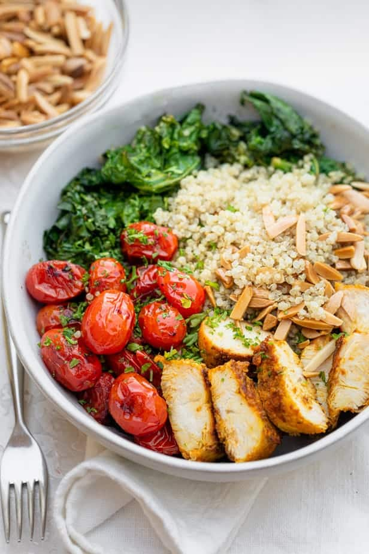

Chicken & Quinoa Bowl

Description
Chicken and Quinoa Bowl is an easy weeknight dinner that you can throw together with leftover quinoa, chicken, any vegetables and nuts - hearty and healthy!
Ingredients
- 11/2 cups of uncooked quinoa
- 1 pound boneless chicken breast or tenders
- 2 tablespoons olive oil divided
- 1/2 teaspoon paprika
- 1/4 teaspoon turmeric
- 1/4 teaspoon coriander
- 1/4 teaspoon onion powder
- 1/2 teaspoon salt
- 1/4 teaspoon black pepper
- 6 cups chopped kale
- 1 pint cherry tomatoes
- 1/2 cup toasted silvered almonds
- Chopped parsley for serving
Steps
- Place quinoa in a small saucepan and add 21/4 cup water. Bring mixture to a boil over medium-high heat. Lower heat to a simmer and cook covered for 15 minutes. Remove the pot from the heat. Allow the quinoa to rest in the saucepan for about 5 minutes, without opening the lid, to absorb all the liquid and steam. Uncover and fluff with a fork to separate the quinoa.
- In a shallow bowl, stir together 1 tablespoon olive oil along with the paprika, turmeric, coriander, onion powder, salt and pepper. Add chicken to the bowl and coat in the seasoning mixture.
- In a medium skillet over medium heat, heat the remaining 1 tablespoon olive oil. Transfer the chicken to the skillet and cook until the juices run clear, about 3-4 minutes per side. Remove from heat and allow it to cool, then slice each breast into strips.
- In the same skillet used to cook the chicken, add the kale and cook on medium-high heat until softened and charred, about 3-5 minutes, stirring frequently. You may have to cook in batches. Set aside.
- In the same skillet, add the cherry tomatoes and cook on medium-high heat until softened and charred, about 3-5 minutes, stirring frequently. Set aside.
- Assemble the chicken and quinoa bowls by dividing the quinoa, chicken, kale, tomatoes and almonds between four bowls. Garnish with chopped parsley and serve immediately.